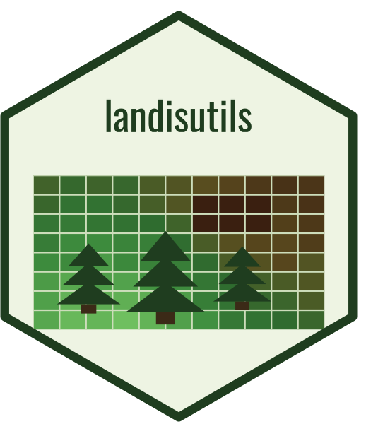

Whether a fire kills a cohort
fire_cohort_killed.RdDynamic Fire's damage rule for one cohort, vectorised over cells or cohorts. Severity 5 kills
every cohort. At severities 1 to 4, the FireDamageTable row that severity minus the species'
fire tolerance picks – the row with the largest difference at or below it, as
base::findInterval() finds it – gives the oldest cohort killed, as a percentage of
longevity, and the cohort dies when its age is at or below that share. Below the table's
smallest difference nothing dies. Any other severity, including the 0 of a burned cell in which
no cohort was damaged, kills nothing, and so does a missing value in any input.
Usage
fire_cohort_killed(
severity,
age,
longevity,
tolerance,
fire_damage_table,
engine_rule = FALSE
)Arguments
- severity
Numeric. Severity class: a severity map's value minus 2.
- age, longevity, tolerance
Numeric. The cohort's age, and its species' longevity and fire tolerance. Each has length 1 or the length of
severity.- fire_damage_table
data.frame. The
FireDamageTable, indefaultFireDamageTable()'s column order: the percentage of longevity first, severity minus tolerance second. Rows may be in any order.- engine_rule
Logical. Make the age test in single precision, as the extension does?
Details
By default the age test is made in double precision, 100 * age / longevity <= pct, as
landis_overstory_mortality_share() has always made it. With engine_rule = TRUE it is made
as the extension makes it (Event.cs, lines 484-490): pct / 100 >= age / longevity, with
age / longevity rounded to single precision. The two can differ only where age / longevity
is within single-precision rounding of a threshold, as it is when the threshold is a whole
number of years: at 10 % of 300 years, a 30-year-old cohort dies by the first test and survives
the second.
See also
Other Dynamic Fire calibration helpers:
apply_calibrated_damage_age(),
apply_calibrated_hi_prop(),
apply_calibrated_ignprob(),
apply_calibrated_num_fires(),
bc_fuel_code_to_base(),
bc_fuel_label_to_base(),
build_calibration_scenario_template(),
build_calibration_spinup_scenario(),
calibrate_dynamic_fire(),
calibration_par_names(),
dedup_community_snapshot(),
default_severity_prior_sturtevant2009(),
landis_dominant_cohorts(),
landis_overstory_mortality_share(),
loss_from_stats(),
observed_fire_sizes(),
parse_dynamic_fire_logs(),
patch_fire_config(),
run_calibration_spinup(),
run_calibration_validation(),
save_observed_fire_targets(),
sim_landis(),
sim_mock(),
sim_r_reimpl()
Examples
## Tolerance 3 and a 100-year-old cohort of a 300-year species: severity 1 spares it, 2 and 5
## kill it.
fire_cohort_killed(c(1, 2, 5), 100, 300, 3, defaultFireDamageTable())
#> [1] FALSE TRUE TRUE